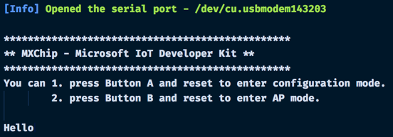
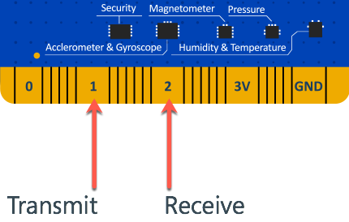

Serial communications
Overview
The MXChip IoT DevKit has two UART serial ports. One is connected to the USB port and allows you to send serial data over a USB cable, such as debugging information. The other is available from Pins 1 and 2 on the finger connector and allows you to connect the device to other modules that send data over serial.
Sending data over the USB serial port
The USB serial port is available using the Serial global variable, and this uses the UART_0 serial port. The API for this is identical to the standard Arduino Serial API, which you can read about in the Arduino Serial communication docs.
// Open the serial port at a speed of 115200 baud
Serial.begin(115200);
// Send a message over the serial connection
Serial.write("Hello");
You can monitor data sent over this serial connection using the VS Code Serial Monitor, available from the command palette by selecting Arduino: Open Serial Monitor. The board will send logging information over this port in addition to the data you send.

Sending data over the finger connector serial port
The second UART serial port is available via the finger connector on the large pins 1 and 2.

| Pin | Usage |
|---|---|
| 1 | TX - Transmit |
| 2 | RX - Receive |
Pin 1 is the transmit (TX) pin, and is used to send serial data to an external module. This pin should connect to the RX pin on the external module.
Pin 2 is the receive (RX) pin, and is used to receive serial data from an external module. This pin should connect to the TX pin on the external module.
NOTE: The TX pin on the MXChip IoT DevKit needs to connect to the RX pin on an external module, and vice versa. The signal transmitted needs to go to a receiving pin.
Once the device is connected, you will need to declare a new UARTClass variable pointing to the second serial port, UART_1.
UARTClass Serial1(UART_1);
This has the same type as the Serial global variable, and uses the same serial API.
// Open the serial port at a speed of 9600 baud
Serial.begin(9600);
// Read a byte from the second serial port
int byte = Serial1.read();
// Send the byte to the USB serial port for debugging
Serial.write(byte);
Problems and feedback
If you encounter problems, you can find FAQs if you encounter problems or reach out to us from our Gitter channel.